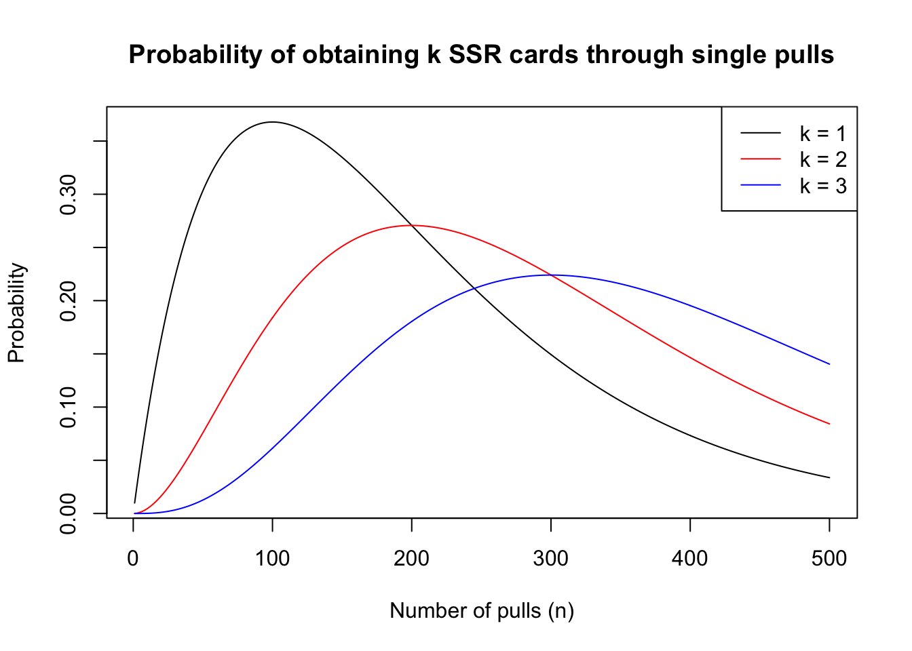
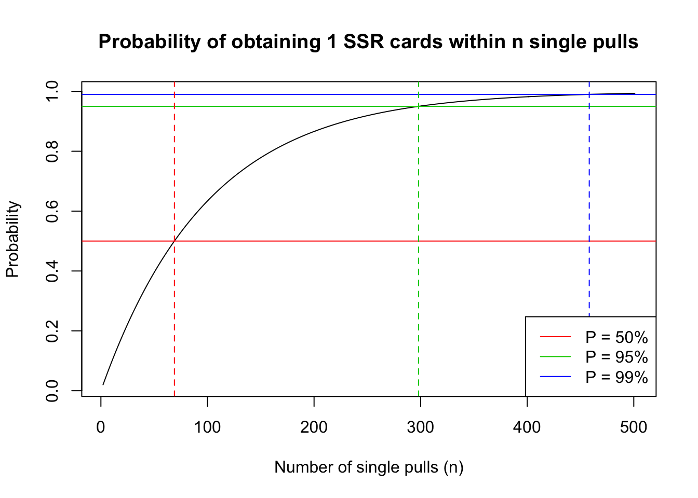

Last updated: 2020-12-20
Checks: 7 0
Knit directory: gacha/
This reproducible R Markdown analysis was created with workflowr (version 1.6.2). The Checks tab describes the reproducibility checks that were applied when the results were created. The Past versions tab lists the development history.
Great! Since the R Markdown file has been committed to the Git repository, you know the exact version of the code that produced these results.
Great job! The global environment was empty. Objects defined in the global environment can affect the analysis in your R Markdown file in unknown ways. For reproduciblity it’s best to always run the code in an empty environment.
The command set.seed(20201216) was run prior to running the code in the R Markdown file. Setting a seed ensures that any results that rely on randomness, e.g. subsampling or permutations, are reproducible.
Great job! Recording the operating system, R version, and package versions is critical for reproducibility.
Nice! There were no cached chunks for this analysis, so you can be confident that you successfully produced the results during this run.
Great job! Using relative paths to the files within your workflowr project makes it easier to run your code on other machines.
Great! You are using Git for version control. Tracking code development and connecting the code version to the results is critical for reproducibility.
The results in this page were generated with repository version a82f053. See the Past versions tab to see a history of the changes made to the R Markdown and HTML files.
Note that you need to be careful to ensure that all relevant files for the analysis have been committed to Git prior to generating the results (you can use wflow_publish or wflow_git_commit). workflowr only checks the R Markdown file, but you know if there are other scripts or data files that it depends on. Below is the status of the Git repository when the results were generated:
Ignored files:
Ignored: .DS_Store
Ignored: .RData
Ignored: .Rhistory
Ignored: gacha/.RData
Ignored: gacha/.Rhistory
Untracked files:
Untracked: analysis/shiny.Rmd
Unstaged changes:
Modified: code/wflow_init.R
Note that any generated files, e.g. HTML, png, CSS, etc., are not included in this status report because it is ok for generated content to have uncommitted changes.
These are the previous versions of the repository in which changes were made to the R Markdown (analysis/gacha.Rmd) and HTML (docs/gacha.html) files. If you’ve configured a remote Git repository (see ?wflow_git_remote), click on the hyperlinks in the table below to view the files as they were in that past version.
| File | Version | Author | Date | Message |
|---|---|---|---|---|
| html | 8fbcdf9 | Lijia Wang | 2020-12-18 | Build site. |
| html | 9f25d18 | Lijia Wang | 2020-12-18 | Build site. |
| html | 3e046d1 | Lijia Wang | 2020-12-17 | Build site. |
| Rmd | 985204e | Lijia Wang | 2020-12-17 | appended 10-pull bonus |
| html | 2357df5 | Lijia Wang | 2020-12-17 | Build site. |
| html | e97114c | Lijia Wang | 2020-12-17 | Build site. |
| Rmd | 81db14e | Lijia Wang | 2020-12-17 | 10-pull bonus (WIP) |
| html | 1ba59f6 | Lijia Wang | 2020-12-16 | Build site. |
| html | 998f5f3 | Lijia Wang | 2020-12-16 | Build site. |
| Rmd | e77d1c4 | Lijia Wang | 2020-12-16 | single pulls |
In this section, we will introduce and model a gacha scenario where all characters in the same rarity level have the same probability of getting pulled, and pulls are performed one at a time (therefore no bonuses are applied). We would like to find the expected number of trials until we obtain any SSR character.
In this scenario, the probability of getting each tier is constant, and the probability to pull each character within the tier is the same. Let the probability of pulling an SSR be \(p\), and suppose there are \(n\) characters in the SSR tier, then the probability to pull each individual SSR character is \(\frac{p}{n}\). We also assume that pulls are performed one at a time and under the assumption that no previous pull affects the result of the next pull.
This process can be modeled as a simple Bernoulli process with an unfair coin, where probability of obtaining an SSR character (“success”) is \(p\) and not obtaining an SSR (“failure”) is \((1-p)\). This means we would probably expect on average \(1/p\) pulls to obtain the first SSR.
We notice that the probability of success \(p\) is typically very small in each gacha game, ranging from 0.600% (Genshin Impact) to 2.000% (Arknights) in the examples we use. Therefore, we are safe to approximate the probability of SSR pulls with a Poisson distribution.
\[ f(k; \lambda) = Pr(X=k) = \frac{\lambda^k}{k!}e^{-\lambda} \]
Since \(p\) small, we can approximate \(\lambda = np\). We can subsequently rephrase our question into “in how many trials can we maximize the probability of obtaining exactly 1 SSR card”?
We plotted the probabilities of obtaining 1, 2, and 3 SSR cards in 1 to 500 pulls. Here we used the Fate/Grand Order Saint Quartz Summon Distribution Rate on an non-event banner. We define “success” as pulling a 5-star servant (character), and the probability is 1.000% (according to in-game statistics provided).
[1] "Number of pulls that maximizes probability of 1 SSR is 100"[1] "Number of pulls that maximizes probability of 2 SSRs is 200"[1] "Number of pulls that maximizes probability of 3 SSRs is 300"
| Version | Author | Date |
|---|---|---|
| 998f5f3 | Lijia Wang | 2020-12-16 |
We know that our probability of pulling 1 character is maximized at 100 single pulls, but that information itself is not all that useful. We will use the cumulative distribution function to explore at what point we will obtain a 95% chance of pulling an SSR character through single pulls only.
Each pull is a Bernoulli Variable \(X_i\) and are independentally and identically distributed. Therefore, we can apply the geometric distribution and obtain the probability of obtaining the first success at the \(k\)-th trial:
\[ Pr(X=k) = (1-p)^{k-1}p\]
and we have the cumulative distribution function:
\[ Pr(X\leq k) = 1-(1-p)^k \]
And we would like to find the number \(k\) when \(Pr(X\leq k) \geq 0.95\), which can be easily computed given probability \(p\).
In the F/GO case, If we would like to achieve 50% chance of getting an SSR:
\[ Pr(X\leq k) = 1-(1-p)^k = 1-(1-0.01)^k = 0.50\]
\[ k = \frac{log(0.50)}{log(1-0.01)} = 68.96\]
If we would like to achieve 95% chance of getting an SSR:
\[ Pr(X\leq k) = 1-(1-p)^k = 1-(1-0.01)^k = 0.95\]
\[ k = \frac{log(0.05)}{log(1-0.001)} = 298.07\]
And for 99% chance, you would get:
\[ k = \frac{log(0.01)}{log(1-0.01)} = 458.21\]
This means if you saved up for 459 single pulls, you are almost guaranteed to obtain an SSR character from the gacha.

| Version | Author | Date |
|---|---|---|
| 3e046d1 | Lijia Wang | 2020-12-17 |
R version 3.6.2 (2019-12-12)
Platform: x86_64-apple-darwin15.6.0 (64-bit)
Running under: macOS 10.16
Matrix products: default
BLAS: /Library/Frameworks/R.framework/Versions/3.6/Resources/lib/libRblas.0.dylib
LAPACK: /Library/Frameworks/R.framework/Versions/3.6/Resources/lib/libRlapack.dylib
locale:
[1] en_US.UTF-8/en_US.UTF-8/en_US.UTF-8/C/en_US.UTF-8/en_US.UTF-8
attached base packages:
[1] stats graphics grDevices utils datasets methods base
other attached packages:
[1] workflowr_1.6.2
loaded via a namespace (and not attached):
[1] Rcpp_1.0.3 rprojroot_1.3-2 digest_0.6.25 later_1.0.0
[5] R6_2.4.1 backports_1.1.5 git2r_0.26.1 magrittr_1.5
[9] evaluate_0.14 stringi_1.4.6 rlang_0.4.5 fs_1.3.2
[13] promises_1.1.0 whisker_0.4 rmarkdown_2.1 tools_3.6.2
[17] stringr_1.4.0 glue_1.3.2 httpuv_1.5.2 xfun_0.12
[21] yaml_2.2.1 compiler_3.6.2 htmltools_0.4.0 knitr_1.28